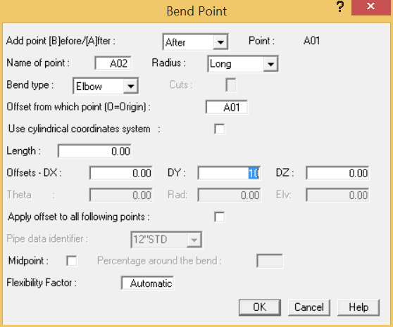

Routing from the Anchor to the Tee
.png) You will begin this system by
inserting an anchor element. An anchor restrains the pipe in all 3
translational and all 3 rotational directions.
You will begin this system by
inserting an anchor element. An anchor restrains the pipe in all 3
translational and all 3 rotational directions.
- Select Insert > Supports > Anchor/NodeLink to display the Anchor/NodeLink dialog.
- Press OK to accept the defaults and place a rigid anchor with no thermal movements.
.jpg) The next component will be an
elbow. An elbow (bend) is a unique component in AutoPIPE because it
must be offset a specified distance from an existing point, and
because the orientation of the bend is determined by the location
of the next component placed in the model. The user specifies the
distance from the previous point to the tangent intersection point
(TIP) of the bend (see graphic below). After the TIP is known, the
orientation of the elbow is determined by the subsequent
component.
The next component will be an
elbow. An elbow (bend) is a unique component in AutoPIPE because it
must be offset a specified distance from an existing point, and
because the orientation of the bend is determined by the location
of the next component placed in the model. The user specifies the
distance from the previous point to the tangent intersection point
(TIP) of the bend (see graphic below). After the TIP is known, the
orientation of the elbow is determined by the subsequent
component.
- Select Insert > Piping Components > Bend to place the elbow. The Bend dialog is displayed as shown below.
- You will place this elbow 10’ 3 ½” {3100mm} from the anchor point in the Z-direction. AutoPIPE allows you to input architectural units. Tab twice to the DZ field and then input
10.29 {3100} (An equivalent entry would be 10-3-1/2). Tab to advance the cursor to the next field. Notice that the Length field is updated automatically, and converts the feet/inches format to decimal units. Press OK to close the dialog. The model appears as shown in the following figure.
5. Select Insert > Piping Components > Bend to place a second elbow.

- Tab twice to the DY-Offsets field and enter 10 {3000} to indicate a 10 foot {3000mm} vertical offset dimension to the tangent intersection point. Press OK to close the dialog. The model appears as shown in the following figure. Note that the first elbow is now drawn, while the second elbow is not. This is because the second elbow is still awaiting the definition of a new point in order to properly orient the elbow in three-dimensional space. Also, AutoPIPE automatically placed a run of pipe between the anchor and the first bend.
- Select View > Mode > Solid Model View to display a three-dimensional view of the model as shown below. Notice that a pipe segment exists between the anchor and the bend at point A01.
- Select Insert > Piping Components > Run to create a new run point. The Run Point dialog is displayed as shown in the following figure.
- Tab once to the DX-Offsets field and enter – 3 {-900} to create a new run point 3 feet {900mm} from the TIP of the second bend in the -X direction. Press OK to close the dialog. The model appears as shown in the following figure.
- The next step is to insert a reducer at point A03. Select Insert > Piping Components > Reducer to display the dialog shown below.
- Enter 9" {225} (note the use of the inch symbol here) in the Length field. Note that the length field keeps track of the local axis, saving you from having to type DX, DY, DZ offsets. Again, once you Tab to advance the cursor, AutoPIPE automatically converts the Imperial units (9”) to the decimal equivalent (0.75).
- Since a reducer always has a different pipe property on the other end, you need to input a new pipe identifier name to assign properties. Input 8"STD {200STD} in the Pipe Identifier field, and then press OK.
- The Pipe Properties dialog is displayed as shown in the following figure.
- Select 8.00 {200} from the Nominal Diameter selection list, and then press OK to accept the remaining pipe property values.
- When the Operating Pressure & Temperature dialog displays, accept the default values and click OK
to continue. The model appears as shown in the following figure.
- Next, you will insert a valve beginning at node A04 at the far point of the reducer. Select Insert
> Piping Components > Valve to open the Valve dialog.
- In this example, you will allow the weight and length of the valve to be extracted from AutoPIPE's valve database. Select AutoPIPE Generic from the Manufacturer selection list, then select ANSI/ASME from the Standard selection list.
- Select Gate Valves from the Sub Category selection list and select a Pressure Rating of 300 as shown above. Notice that valve length and weight are automatically filled in from the database (the valve properties from the AutoPIPE database can be overridden). Press OK to close the dialog. The model appears as shown in the following figure.
- There are several zooming controls provided by AutoPIPE. To zoom into the valve to examine it in detail, click PT1 as shown in the figure above, and then press and hold the mouse window and “drag” the cursor to define the opposite corner (PT2 in the figure above). A dotted line defines the perimeter of the viewing window. Select View > Zoom-Pan > Zoom In to zoom into the defined area. The model appears as shown in the following figure.
- Notice that the valve requires a flange connection. To add flanges to both ends of the valve with one command, you will first select the entire component. Click along the outer edge of the valve to select and highlight it.
21. Select Insert > Piping Components > Flange to display the Flange dialog.
-
.png) Accept the default
SLIP-ON
Flange type. From the
Pressure Rating list, select 300. In the
Joint End Type, select Weld Neck from the
drop-down list. Press OK to accept the remaining
defaults. AutoPIPE's flange database is used for the definition of
flange weights. Flanges are placed on both sides of the valve as
shown in the graphic below.
Accept the default
SLIP-ON
Flange type. From the
Pressure Rating list, select 300. In the
Joint End Type, select Weld Neck from the
drop-down list. Press OK to accept the remaining
defaults. AutoPIPE's flange database is used for the definition of
flange weights. Flanges are placed on both sides of the valve as
shown in the graphic below.
- Select View > Zoom-Pan > Zoom Extents. The extents of the model are displayed as shown in the following figure.